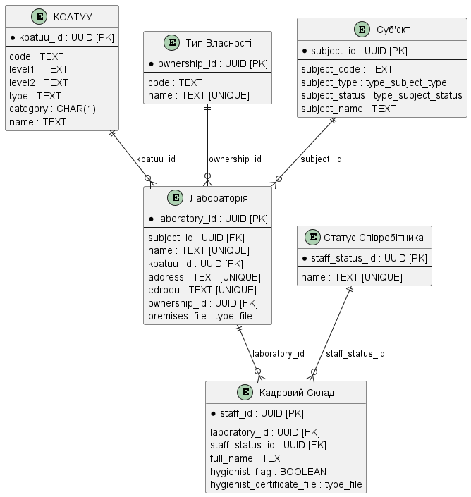

Завдання 1. Моделювання структур бази даних реєстру
- 1. Мета завдання
- 2. Завдання
- 3. План розробки фізичної моделі даних
- 4. Створення таблиць і зв’язків між ними
- 5. Створення критеріїв пошуку для інтеграції з формами бізнес-процесів
- 5.1. Пошук області в таблиці «КОАТУУ»
- 5.2. Пошук населеного пункту за назвою та кодом області в таблиці «КОАТУУ»
- 5.3. Пошук типу власності за назвою в таблиці «Тип Власності»
- 5.4. Пошук суб’єкта за типом і кодом у таблиці «Суб’єкт»
- 5.5. Пошук лабораторій за назвою або кодом ЄДРПОУ в таблиці «Лабораторія»
- 5.6. Пошук співробітника за іменем у таблиці «Статус співробітника»
- 6. Первинне завантаження даних
- 7. Застосування розробленої моделі до бази даних
- 8. Корисна документація по роботі з Liquibase
| 🌐 Цей документ доступний українською та англійською мовами. Використовуйте перемикач у правому верхньому куті, щоб змінити версію. |
1. Мета завдання
- Виконання цього завдання має на меті:
-
-
Навчити моделювати структури бази даних.
-
Навчити розробляти XML-шаблони Liquibase для розгортання структур у базі даних реєстру.
-
Навчити створювати критерії пошуку у БД (Search Conditions) для інтеграції фабрики даних із бізнес-процесами.
-
2. Завдання
Створити структуру бази даних для збереження й обробки інформації із сертифікації лабораторій відповідно до наступної логічної моделі даних:

|
В ході виконання поточного завдання уся необхідна інформація, приклади, файли надаються. Однак ви можете одразу клонувати репозиторій вашого проєкту із регламентом, використовуючи покрокову інструкцію. У регламенті всі
У папці data-model містяться файли Надалі всі схеми для розгортання БД та API-представлень створюються у папці data-model, CSV-довідники для подальшого наповнення даними таблиць-довідників розміщуються у data-model/data-load. |
|
Окремо потрібно також створити файл
Хоча ці changeSet-и можна включити до основного файлу для створення таблиць ( |
Детальніше про всі налаштування ви дізнаєтеся нижче у цьому документі.
3. План розробки фізичної моделі даних
-
Визначити первинні ключі для кожної із сутностей.
-
Визначити вторинні ключі, якщо вони є в сутності.
-
Визначити обов’язкові поля.
-
Визначити поля або комбінацію полів, що мають унікальні значення.
-
Визначити назву таблиць та полів латиницею.
4. Створення таблиць і зв’язків між ними
-
Відкрийте теку data-model у регламенті та створіть файл
tablesSubjects.xml, який міститиме changeSet-и з кастомними типами даних. Зокрема, у цьому файлі будуть визначені наступні типи:-
type_subject_type -
type_subject_status-
Скопіюйте метадані із шаблону XML-файлу, наведеного нижче, та додайте їх до свого файлу
tablesSubjects.xmlбез змін.Цей шаблон XML задає основні параметри для роботи Liquibase з кастомними типами даних. Він визначає версії XML-схем та специфічні простори назв для розширень (наприклад,
dbchangelogтаdbchangelog-ext). Зокрема,xsi:schemaLocationвказує Liquibase, де знайти схеми для перевірки змін у базі даних.<?xml version="1.0" encoding="UTF-8"?> <databaseChangeLog xmlns="http://www.liquibase.org/xml/ns/dbchangelog" xmlns:xsi="http://www.w3.org/2001/XMLSchema-instance" xmlns:ext="http://www.liquibase.org/xml/ns/dbchangelog-ext" xsi:schemaLocation="http://www.liquibase.org/xml/ns/dbchangelog http://artifactory.control-plane-nexus/nexus/repository/extensions/com/epam/digital/data/platform/dbchangelog/4.5/dbchangelog-4.5.xsd http://www.liquibase.org/xml/ns/dbchangelog-ext http://artifactory.control-plane-nexus/nexus/repository/extensions/com/epam/digital/data/platform/liquibase-ext-schema/latest/liquibase-ext-schema-latest.xsd"> </databaseChangeLog> -
Додайте changeSet для типу
type_subject_typeвсередині тега<databaseChangeLog>:У цьому блоці коду створюється кастомний тип
type_subject_typeяк enum-список, що використовується для визначення типу суб’єкта.changeSetвключає метадані, такі як автор і унікальний ідентифікатор, які відстежують цю зміну. Значення enum включають переклади для кожного значення, що дозволяє використовувати їх у локалізованих інтерфейсах.<?xml version="1.0" encoding="UTF-8"?> <databaseChangeLog xmlns="http://www.liquibase.org/xml/ns/dbchangelog" xmlns:xsi="http://www.w3.org/2001/XMLSchema-instance" xmlns:ext="http://www.liquibase.org/xml/ns/dbchangelog-ext" xsi:schemaLocation="http://www.liquibase.org/xml/ns/dbchangelog http://artifactory.control-plane-nexus/nexus/repository/extensions/com/epam/digital/data/platform/dbchangelog/4.5/dbchangelog-4.5.xsd http://www.liquibase.org/xml/ns/dbchangelog-ext http://artifactory.control-plane-nexus/nexus/repository/extensions/com/epam/digital/data/platform/liquibase-ext-schema/latest/liquibase-ext-schema-latest.xsd"> <changeSet author="registry owner" id="enum subject_type"> <comment>CREATE TYPE type_subject_type</comment> <ext:createType name="type_subject_type"> <ext:asEnum> <ext:label translation="Фізична особа">INDIVIDUAL</ext:label> <ext:label translation="ФОП">ENTREPRENEUR</ext:label> <ext:label translation="Юридична особа">LEGAL</ext:label> <ext:label translation="Чиновник">OFFICER</ext:label> </ext:asEnum> </ext:createType> </changeSet> </databaseChangeLog> -
Додайте changeSet для типу
type_subject_statusпісля changeSet-уtype_subject_type, у тому ж<databaseChangeLog>:Тут додається другий кастомний тип даних
type_subject_status. Цей тип також визначений як enum, але його значення описують статуси суб’єктів у системі. Додаючи цей changeSet післяtype_subject_type, ми забезпечуємо правильний порядок виконання, який дозволяє Liquibase коректно обробити кожен кастомний тип перед створенням таблиць. В результаті ви маєте отримати наступну структуру:<?xml version="1.0" encoding="UTF-8"?> <databaseChangeLog xmlns="http://www.liquibase.org/xml/ns/dbchangelog" xmlns:xsi="http://www.w3.org/2001/XMLSchema-instance" xmlns:ext="http://www.liquibase.org/xml/ns/dbchangelog-ext" xsi:schemaLocation="http://www.liquibase.org/xml/ns/dbchangelog http://artifactory.control-plane-nexus/nexus/repository/extensions/com/epam/digital/data/platform/dbchangelog/4.5/dbchangelog-4.5.xsd http://www.liquibase.org/xml/ns/dbchangelog-ext http://artifactory.control-plane-nexus/nexus/repository/extensions/com/epam/digital/data/platform/liquibase-ext-schema/latest/liquibase-ext-schema-latest.xsd"> <changeSet author="registry owner" id="enum subject_type"> <comment>CREATE TYPE type_subject_type</comment> <ext:createType name="type_subject_type"> <ext:asEnum> <ext:label translation="Фізична особа">INDIVIDUAL</ext:label> <ext:label translation="ФОП">ENTREPRENEUR</ext:label> <ext:label translation="Юридична особа">LEGAL</ext:label> <ext:label translation="Чиновник">OFFICER</ext:label> </ext:asEnum> </ext:createType> </changeSet> <changeSet author="registry owner" id="enum subject_status"> <comment>CREATE TYPE type_subject_status</comment> <ext:createType name="type_subject_status"> <ext:asEnum> <ext:label translation="скасовано">CANCELED</ext:label> <ext:label translation="зареєстровано">REGISTERED</ext:label> <ext:label translation="в стані припинення">SUSPENDING</ext:label> <ext:label translation="припинено">SUSPENDED</ext:label> <ext:label translation="порушено справу про банкрутство">BANKRUPTCY</ext:label> <ext:label translation="порушено справу про банкрутство (санація)">SANCTION</ext:label> <ext:label translation="зареєстровано, свідоцтво про державну реєстрацію недійсне">NOTVALID</ext:label> </ext:asEnum> </ext:createType> </changeSet> </databaseChangeLog>
-
-
-
Використовуючи інформацію, визначену у плані розробки фізичної моделі даних, та відповідний XML-шаблон, поданий нижче, створіть порожній файл createTables.xml
Використовуйте готовий файл createTables.xmlяк приклад. -
Скопіюйте метадані із шаблону XML-файлу, поданого нижче, та додайте до свого файлу як є, без змін.
Приклад. Шаблон XML-файлу<?xml version="1.0" encoding="UTF-8"?> <databaseChangeLog xmlns="http://www.liquibase.org/xml/ns/dbchangelog" xmlns:xsi="http://www.w3.org/2001/XMLSchema-instance" xmlns:ext="http://www.liquibase.org/xml/ns/dbchangelog-ext" xsi:schemaLocation="http://www.liquibase.org/xml/ns/dbchangelog http://www.liquibase.org/xml/ns/dbchangelog/dbchangelog-4.2.xsd http://www.liquibase.org/xml/ns/dbchangelog-ext https://nexus.apps.server-name.dev.registry.eua.gov.ua/nexus/repository/extensions/com/epam/digital/data/platform/liquibase-ext-schema/latest/liquibase-ext-schema-latest.xsd"> </databaseChangeLog>https://<link to central Nexus>/nexus/repository/extensions/com/epam/digital/data/platform/liquibase-ext-schema/latest/liquibase-ext-schema-latest.xsd
-
Змінна
<link to central Nexus>— шлях до Nexus-сервера центральних компонентів (потрібно змінювати, наприклад, при перенесенні реєстру на інший кластер).
Кожен файл із розширенням .xml має містити системну інформацію зверху, всередині тегу
<databaseChangeLog>.Альтернативно використовуйте шаблон
main-liquibase.xmlіз Gerrit-репозиторію як приклад для копіювання метаданих.Файл
main-liquibase.xmlвиконує функції "індексу" та через директиву<include>встановлює посилання до інших XML-шаблонів, необхідних для розгортання структур даних. -
4.1. Порядок створення таблиць
Змініть порядок наборів змін (changeSet) у файлі createTables.xml таким чином, щоб таблиці, що мають зовнішні посилання до інших таблиць, створювались після тих, до яких вони посилаються. Тобто таблиці з лабораторіями мають створюватись після таблиць «КОАТУУ» та «Тип Власності».
Розташуйте набори змін для розгортання таблиць у наступному порядку:
-
«КОАТУУ»
-
«Тип Власності»
-
«Суб’єкт»
-
«Лабораторія»
-
«Статус Співробітника»
-
«Кадровий Склад»
4.2. Створення таблиці «Лабораторія»
| На прикладі таблиці «Лабораторія» розглянемо процес створення changeSets в рамках розгортання фізичної моделі даних. |
На цьому етапі необхідно створити нову таблицю із назвою «Лабораторія». Етап передбачає виконання наступних кроків:
- 1.Створіть
changeSet -
На цьому кроці необхідно створити changeSet — набір атомарних змін в Liquibase.
У файлі createTables.xml, всередині тегу
<databaseChangeLog>, після метаданих, додайте тег<changeSet>.Таблиця 1. Обов’язкові атрибути Атрибут Значення idНаприклад,
"table laboratory"authorваші ПІБ
В результаті отримуємо наступну структуру:
<databaseChangeLog> ... ... <changeSet id="table laboratory" author="registry owner"> </changeSet> <changeSet id="table ownership" author="registry owner"> </changeSet> ... </databaseChangeLog> - 2. (Опціонально) Додайте коментар
-
Бажано, але не обов’язково, всередині тегу
<changeSet>додати тег<comment>з коментарем, що буде пояснювати, які саме зміни впроваджує цей changeSet.В результаті розширюємо нашу структуру наступним чином:
<databaseChangeLog> ... ... <changeSet id="table laboratory" author="registry owner"> <comment>Створюємо таблицю laboratory</comment> </changeSet> </databaseChangeLog> - 3. Додайте тег
createTable -
На цьому кроці потрібно створити порожню таблицю.
Всередині тегу
<changeSet>додайте тег<createTable>із назвою таблиці «Лабораторія» латиницею.Таблиця 2. Обов’язкові атрибути Атрибут Значення tableName"laboratory"ext:historyFlag"true"В результаті розширюємо нашу структуру наступним чином:
<databaseChangeLog> ... ... <changeSet id="table laboratory" author="registry owner"> <comment>Створюємо таблицю laboratory</comment> <createTable tableName="laboratory" ext:historyFlag="true"> </createTable> </changeSet> </databaseChangeLog>В рамках процесу верифікації регламенту, флаг
historyFlagзі значеннямtrueвимагається при використанні уchangeSetтегів<createTable>або<addColumn>. Тому при створенні таблиці необхідно вказувати відповідне значенняhistoryFlag="true".Таким чином, буде додатково згенерована історична таблиця, і для кожної з таблиць буде згенеровано свій специфічний набір службових полів.
Детальна інформація про атрибут
ext:historyFlagдоступна за посиланням: - 4. Додаємо тег
column -
На цьому кроці необхідно визначити стовпці таблиці.
Для кожного поля, що було визначено для таблиці «Лабораторія» у плані розробки фізичної моделі даних, всередині тегу
<createTable>додайте тег<column>, зазначивши назву стовпця та тип даних, що зберігатимуться.Таблиця 3. Атрибути Атрибут Значення nameНазва стовпця
typeТип даних
(наприклад,
"UUID","TEXT")В результаті розширюємо нашу структуру наступним чином:
<databaseChangeLog> ... ... <changeSet id="table laboratory" author="registry owner"> <comment>Створюємо таблицю laboratory</comment> <createTable tableName="laboratory" ext:historyFlag="true"> <column name="<назва стовпця>" type="<тип даних>"> </column> </createTable> </changeSet> </databaseChangeLog>-
Для змінної
<назва стовпця>введіть назву стовпця латиницею. -
Для змінної
<тип даних>зазначте тип даних.
-
- 5. Додайте тег
constraints -
На цьому кроці необхідно зазначити обмеження для кожного стовпця таблиці.
-
Для стовпця, визначеного як первинний ключ, додайте підлеглий тег
<constraints>із наступними атрибутами:Таблиця 4. Атрибути Атрибут Значення nullable"false"primaryKey"true"primaryKeyNameНаприклад,
"pk_laboratory_id".Тип даних стовпця:
UUIDНазва первинного ключа має бути унікальною.
defaultValueComputed"uuid_generate_v4()"Значення ключа за замовчуванням.
Атрибут
nullable="false"вимагається для всіх стовпців, що, відповідно до бізнес-логіки, не допускають нульових значень.Використовуйте ЛИШЕ тип
UUIDдля усіх ключів таблиць і функціюuuid_generate_v4()як значення за замовчуванням. Ця функція згенерує випадкове числове значення (див. https://www.uuidgenerator.net/version4). -
Для усіх зовнішніх посилань додайте тег
<constraints>з атрибутамиforeignKeyName,referencedTableNameтаreferencedColumnNames, зазначивши в них унікальну назву зовнішнього ключа, таблиці та стовпця, до яких вони посилаються:Таблиця 5. Атрибути Атрибут Значення foreignKeyName"fk_<Унікальна назва зовнішнього ключа>"referencedTableName"<Назва таблиці, до якої посилається зовнішній ключ>"referencedColumnNames"<Назва стовпця таблиці, до якого посилається зовнішній ключ>"На початку значення атрибута foreignKeyNameдодайте відповідний префіксfk_, що вказуватиме на зв’язок із зовнішньою таблицею.При додаванні зовнішніх ключів, зверніть увагу на порядок створення таблиць.
-
- 6. У результаті ви маєте отримати наступну структуру:
-
Приклад. ChangeSet із тегом для створення таблиці
laboratory<databaseChangeLog> ... ... <changeSet id="table laboratory" author="registry owner"> <comment>Створюємо таблицю laboratory</comment> <createTable tableName="laboratory" ext:historyFlag="true"> <column name="laboratory_id" type="UUID" defaultValueComputed="uuid_generate_v4()"> <constraints nullable="false" primaryKey="true" primaryKeyName="pk_laboratory_id"/> </column> <column name="subject_id" type="UUID" remarks="Ідентифікатор суб'єкта"> <constraints nullable="false" foreignKeyName="fk_laboratory_subject" referencedTableName="subject" referencedColumnNames="subject_id"/> </column> <column name="name" type="TEXT"> <constraints nullable="false" unique="true"/> </column> <column name="koatuu_id" type="UUID"> <constraints nullable="false" foreignKeyName="fk_laboratory_koatuu" referencedTableName="koatuu" referencedColumnNames="koatuu_id"/> </column> <column name="address" type="TEXT"> <constraints nullable="false" unique="true"/> </column> <column name="edrpou" type="TEXT"> <constraints nullable="false" unique="true"/> </column> <column name="ownership_id" type="UUID"> <constraints nullable="false" foreignKeyName="fk_laboratory_ownership" referencedTableName="ownership" referencedColumnNames="ownership_id"/> </column> <column name="premises_file" type="type_file" remarks="Документи про приміщення"/> </createTable> </changeSet> </databaseChangeLog>Для всіх полів, що мають містити лише унікальний набір значень, додайте тег
<constraints>з атрибутамиunique="true"таuniqueConstraintName(опціонально):Приклад. Створення таблиці з обмеженнямunique<changeSet id="table ownership" author="registry owner"> <createTable tableName="ownership" ext:historyFlag="true" remarks="Довідник форм власності"> <column name="ownership_id" type="UUID" defaultValueComputed="uuid_generate_v4()"> <constraints nullable="false" primaryKey="true" primaryKeyName="pk_ownership_id"/> </column> <column name="code" type="TEXT" remarks="Код"> <constraints nullable="false"/> </column> <column name="name" type="TEXT" remarks="Назва"> <constraints nullable="false" unique="true"/> </column> </createTable> </changeSet>У випадку, коли декілька полів мають складати унікальне значення, після тегу
<createTable>додайте тег<addUniqueConstraint>, зазначивши в атрибутіtableNameназву таблиці, на яку накладається обмеження, а в атрибутіcolumnNames— перелік полів, що у комбінації мають бути унікальними.Приклад. Створення таблиці з тегом<addUniqueConstraint><createTable> ... ... </createTable> <addUniqueConstraint tableName="laboratory" columnNames="name,edrpou"/>
|
Принцип створення подальших таблиць є аналогічним зазначеному в прикладі з таблицею «Лабораторія». Структура параметрів у таблицях, що створюються, однакова для всіх таблиць у цьому завданні. |
Зверніть увагу, що при моделюванні імен таблиць чи імен полів таблиць, що складаються з 2-х і більше слів, необхідно використовувати символ "_" між словами.
В іменах таблиць та полів допускається використання літер лише латинського алфавіту.
Наприклад: staff_status.
|
|
Існують обмеження щодо використання ідентифікаторів чи імен таблиць та полів. Деякі слова є ключовими словами (key words) у стандартах SQL та PostgreSQL і не дозволені для використання. Перед використанням імен таблиць, ознайомтеся з ключовими словами SQL. Наприклад: таблиця з назвою |
4.3. Створення таблиці «Суб’єкт»
4.3.1. Призначення таблиці registry.subject
Таблиця registry.subject є частиною фізичної моделі даних Реєстру атестованих лабораторій. Її структура є специфічною для конкретного реєстру та визначається вимогами регламенту. Структура цієї таблиці не є стандартною для всіх реєстрів – для кожного проєкту створюються власні таблиці на основі потреб.
Таблиця registry.subject зберігає дані про суб’єкти, пов’язані з об’єктами реєстру, такими як лабораторії. Вона реалізує зв’язок між об’єктами з атрибутом ext:isObject="true" та суб’єктами, яким належать ці об’єкти. Якщо ця таблиця не створена або її ім’я вказано з помилкою, виникнуть помилки під час створення зовнішніх ключів на subject_id.
Таблиця registry.subject використовується в цьому завданні лише як приклад для навчання. Структура даних і регламенти можуть відрізнятися для кожного реєстру.
|
4.3.2. Структура та створення таблиці
Нижче наведено приклад XML-коду для створення таблиці registry.subject:
<changeSet author="registry owner" id="table subject">
<createTable tableName="subject" ext:historyFlag="true">
<column name="subject_id" type="UUID">
<constraints nullable="false" primaryKey="true" primaryKeyName="pk_subject"/>
</column>
<column name="subject_code" type="TEXT">
<constraints nullable="false"/>
</column>
<column name="subject_type" type="type_subject_type"/>
<column name="subject_status" type="type_subject_status"/>
<column name="subject_name" type="TEXT"/>
</createTable>
</changeSet>4.3.3. Порядок створення
Щоб уникнути помилок, таблиця registry.subject має бути створена перед іншими таблицями, що використовують поле subject_id як зовнішній ключ. Наприклад, таблиця laboratory повинна створюватися лише після успішного створення таблиці registry.subject. Якщо порядок порушено, виникне помилка:
ERROR: relation “registry.subject“ does not exist.
Виконайте створення таблиці registry.subject, тобто додайте відповідний changeSet, ПЕРЕД створенням таблиці laboratory.
|
4.3.4. Використання атрибутів ext:isObject та ext:classify
4.3.4.1. Атрибут ext:isObject="true"
Якщо таблиця містить атрибут ext:isObject="true", вона отримує поле subject_id, яке є зовнішнім ключем до таблиці registry.subject. Це поле має обмеження nullable="false", що вимагає обов’язкового заповнення.
<createTable tableName="laboratory" ext:isObject="true">
<column name="laboratory_id" type="UUID">
<constraints nullable="false" primaryKey="true" primaryKeyName="pk_laboratory_id"/>
</column>
<column name="subject_id" type="UUID">
<constraints nullable="false"
foreignKeyName="fk_laboratory_subject"
referencedTableName="subject"
referencedColumnNames="subject_id"/>
</column>
</createTable>Атрибут ext:isObject="true" забезпечує, що об’єкт у таблиці (наприклад, лабораторія) пов’язаний із суб’єктом через зовнішній ключ на subject_id. Якщо таблиці registry.subject немає в регламенті, не використовуйте цей атрибут, щоб уникнути помилок під час розгортання.
4.3.4.2. Використання тегу ext:classify
Тег ext:classify також автоматично додає атрибут isObject="true" і створює поле subject_id з посиланням на таблицю registry.subject. Наприклад:
<createTable tableName="sample" ext:classify="private">
<column name="sample_id" type="UUID">
<constraints nullable="false" primaryKey="true" primaryKeyName="pk_sample_id"/>
</column>
</createTable>Цей код додає поле subject_id та налаштовує зовнішній ключ на таблицю registry.subject. Якщо таблиця registry.subject не створена, виникне помилка.
4.3.5. Призначення полів
-
subject_id– унікальний ідентифікатор суб’єкта у форматі UUID. -
subject_code– код суб’єкта. -
subject_type– тип суб’єкта, який визначається довідником. -
subject_status– статус суб’єкта (наприклад, активний або неактивний). -
subject_name– назва суб’єкта.
4.3.6. Висновки
-
Таблиця
registry.subjectє важливою для забезпечення зв’язків між об’єктами та суб’єктами. -
Використання атрибутів
ext:isObjectтаext:classifyпотребує наявності таблиціregistry.subject. Якщо ця таблиця не потрібна, уникайте використання цих атрибутів. -
Порядок створення таблиць є критичним для уникнення помилок, особливо при роботі із зовнішніми ключами.
-
Структура таблиці
registry.subjectу цьому прикладі може відрізнятися для інших реєстрів залежно від їх специфіки та вимог.
4.4. Створення таблиці «КОАТУУ»
За аналогією до пункту Створення таблиці «Лабораторія», створіть таблицю із назвою «КОАТУУ» (стовпці доступні в createTables.xml):
-
В кінець тегу
<databaseChangeLog>файлу createTables.xml додайте тег<changeSet>, що визначає набір змін. -
Всередині тегу
<changeSet>додайте тег<createTable>із назвою таблиці «КОАТУУ» латиницею (наприклад,"koatuu"). -
Додайте теги
<column>для кожного стовпця таблиці «КОАТУУ», визначеної у пункті План розробки фізичної моделі даних. -
У тегу
<constraints>визначте первинний ключ таблиці, а також всі обов’язкові поля.
4.5. Створення таблиці «Тип Власності»
За аналогією до пункту Створення таблиці «Лабораторія», створіть таблицю із назвою «Тип Власності»:
-
В кінець тегу
<databaseChangeLog>файлу createTables.xml додайте тег<changeSet>, що визначає набір змін. -
Всередині тегу
<changeSet>додайте тег<createTable>із назвою таблиці «Тип Власності» латиницею (наприклад,"ownership"). -
Додайте теги
<column>для кожного стовпця таблиці «Тип Власності», визначеної в пункті План розробки фізичної моделі даних. -
У тегу
<constraints>визначте первинний ключ таблиці, а також всі обов’язкові поля.
4.6. Створення таблиці «Статус Співробітника»
За аналогією до пункту Створення таблиці «Лабораторія», створіть таблицю із назвою «Статус Співробітника»:
-
В кінець тегу
<databaseChangeLog>файлу createTables.xml додайте тег<changeSet>, що визначає набір змін. -
Всередині тегу
<changeSet>додайте тег<createTable>із назвою таблиці «Статус Співробітника» латиницею (наприклад,"staff_status"). -
Додайте теги
<column>для кожного стовпця таблиці «Статус Співробітника», визначеної у пункті План розробки фізичної моделі даних. -
У тегу
<constraints>визначте первинний ключ таблиці, а також всі обов’язкові поля.
4.7. Створення таблиці «Кадровий склад»
За аналогією до пункту Створення таблиці «Лабораторія», створіть таблицю із назвою «Кадровий склад»:
-
В кінець тегу
<databaseChangeLog>файлу createTables.xml додайте тег<changeSet>, що визначає набір змін. -
Всередині тегу
<changeSet>додайте тег<createTable>із назвою таблиці «Кадровий Склад» латиницею (наприклад,"staff"). -
Додайте теги
<column>для кожного стовпця таблиці «Кадровий Склад», визначеної у пункті План розробки фізичної моделі даних. -
У тегу
<constraints>визначте первинний ключ таблиці, всі зовнішні посилання до інших таблиць, а також всі обов’язкові поля.
4.8. Порядок видалення таблиць
Для видалення таблиці не можна просто видалити changeSet, який її створював.
Видалення відбувається шляхом додавання нового changeSet для видалення конкретної таблиці та її історичної таблиці (назва історичної таблиці така ж, як в основної, але має суфікс _hst.
Приклад: таблиця table-name матиме історичну таблицю table-name_hst).
<changeSet id="drop-table" author="author-name">
<dropTable tableName="table-name"/>
</changeSet><changeSet id="drop-table-hst" author="author-name">
<dropTable tableName="table-name_hst"/>
</changeSet>Лише після видалення таблиці й історичної таблиці можна створити нову таблицю зі зміненими полями.
|
Важливо також при видаленні таблиці враховувати всі залежні від цієї таблиці об’єкти: Процес видалення історичної таблиці, analyticsView і searchConditions подібний до видалення таблиць. Видаляти всі залежні таблиці можна в одному changeSet з урахуванням правильного порядку. Дізнайтеся більше про кастомні XML-теги на сторінках: |
|
При невірній послідовності внесення змін до моделі даних регламенту, можливі помилки під час збірки дата-моделі. Одна із можливих помилок: За потреби, в процесі розробки регламенту, ви можете виконати Cleanup та завантажити заново виправлені Ніколи не робіть cleanup у |
5. Створення критеріїв пошуку для інтеграції з формами бізнес-процесів
Критерії пошуку (Search Conditions) — спеціальні об’єкти, що використовуються формами та бізнес-процесами для отримання набору даних з однієї або декількох таблиць реєстру.
На рівні бази даних вони реалізуються через представлення (views), визначені SQL-запитом до однієї або декількох таблиць.
Для створення критеріїв пошуку використовується тег <ext:createSearchCondition>, розроблений в рамках розширення інструмента створення та керування фізичною моделлю даних Liquibase на Платформі реєстрів, а також спеціальні атрибути критеріїв пошуку.
|
Зверніть увагу, що при моделюванні імен критеріїв пошуку, які складаються з двох або більше слів, необхідно використовувати символ В іменах критеріїв пошуку допускається використання лише літер латинського алфавіту.
Наприклад: Розробники самостійно визначають зручний формат назв у критеріях пошуку. Для кращої ідентифікації можна використовувати різний підхід до назв таблиці та пошукових критеріїв. Для пошукових критеріїв можна додавати, наприклад, префікс або суфікс Приклад можливої назви:
Для кожного критерію пошуку створюється ендпоінт із подібною назвою, але у форматі, де слова розділені дефісом ( |
|
Використовуйте найкращі практики моделювання даних у реєстрі: |
<changeSet author="registry owner" id="SearchCondition">
<ext:createSearchCondition name="SearchCondition" limit="1">
<ext:table name="table_one" alias="to">
<ext:column name="name" alias="to_name"/>
<ext:column name="type" searchType="equal"/>
<ext:function name="count" alias="cnt" columnName="uuid"/>
</ext:table>
<ext:table name="table_two" alias="tt">
<ext:column name="name" alias="tt_name"/>
<ext:column name="code" searchType="contains"/>
<ext:function name="sum" alias="sm" columnName="code"/>
</ext:table>
<ext:join type="left">
<ext:left alias="to">
<ext:column name="name"/>
</ext:left>
<ext:right alias="tt">
<ext:column name="name"/>
</ext:right>
</ext:join>
<ext:where>
<ext:condition tableAlias="to" columnName="type" operator="eq" value="'char'">
<ext:condition logicOperator="or" tableAlias="to" columnName="type" operator="eq" value="'text'"/>
</ext:condition>
<ext:condition logicOperator="and" tableAlias="tt" columnName="code" operator="similar" value="'{80}'"/>
</ext:where>
</ext:createSearchCondition>
</changeSet>-
Створіть для критеріїв пошуку окремий файл
createSearchConditions.xmlз того ж шаблону, що і createTables.xml.Використовуйте готовий файл createSearchConditions.xmlяк приклад. -
За аналогією до таблиць, створіть наступні критерії пошуку в окремих changeSet-ах.
5.1. Пошук області в таблиці «КОАТУУ»
Цей критерій пошуку використовується в бізнес-процесі Створення лабораторії для вибору області за її назвою.
Використовується бізнес-процесом |
Створення лабораторії / |
Назва критерію пошуку |
|
Пошук за полем |
|
Сортування за полем |
|
Детальніше про типи пошуку див. у розділі Оператор contains.
|
<changeSet author="registry owner" id="searchCondition koatuu_obl_contains_name">
<ext:createSearchCondition name="koatuu_obl_contains_name">
<ext:table name="koatuu" alias="k">
<ext:column name="koatuu_id"/>
<ext:column name="code"/>
<ext:column name="name" sorting="asc" searchType="contains"/>
</ext:table>
<ext:where>
<ext:condition tableAlias="k" columnName="type" operator="eq" value="'О'"/>
</ext:where>
</ext:createSearchCondition>
</changeSet>- Пояснення
-
Критерій пошуку
koatuu_obl_contains_nameпрацює наступним чином:-
Фільтрує записи у таблиці
koatuu:-
Шукає записи за частковим збігом значення в полі
name. -
Враховує лише ті записи, у яких поле
typeмає значення'О'(область).
-
-
Поля, які повертає запит:
-
koatuu_id(ідентифікатор області). -
code(код КОАТУУ). -
name(назва області).
-
-
SELECT k.koatuu_id,
k.code,
k.name
FROM koatuu k
WHERE k.type = 'О'::text
ORDER BY k.name;🔹 Запит повертає всі області, у яких поле name містить введене значення та type дорівнює 'О'.
5.2. Пошук населеного пункту за назвою та кодом області в таблиці «КОАТУУ»
Цей критерій пошуку використовується в бізнес-процесі Створення лабораторії для вибору населеного пункту за його назвою та областю.
Використовується бізнес-процесом |
Створення лабораторії / |
Назва критерію пошуку |
|
Пошук за полем |
|
Пошук за полем |
|
Сортування за полем |
|
Детальніше про типи пошуку див. у розділі Оператор startsWith.
|
<changeSet author="registry owner" id="searchCondition koatuu_np_starts_with_name_by_obl">
<ext:createSearchCondition name="koatuu_np_starts_with_name_by_obl" limit="100">
<ext:table name="koatuu" alias="np">
<ext:column name="koatuu_id"/>
<ext:column name="name" searchType="startsWith" sorting="asc"/>
<ext:column name="level1" searchType="equal"/>
</ext:table>
<ext:table name="koatuu" alias="rn">
<ext:column name="name" alias="name_rn"/>
</ext:table>
<ext:join type="left">
<ext:left alias="np">
<ext:column name="level2"/>
</ext:left>
<ext:right alias="rn">
<ext:column name="code"/>
</ext:right>
<ext:condition logicOperator="and" tableAlias="rn" columnName="type" operator="eq" value="'Р'"/>
</ext:join>
<ext:where>
<ext:condition tableAlias="np" columnName="type" operator="eq" value="'НП'"/>
</ext:where>
</ext:createSearchCondition>
</changeSet>- Пояснення
-
Критерій пошуку
koatuu_np_starts_with_name_by_oblпрацює наступним чином:-
Фільтрує записи у таблиці
koatuu:-
Шукає населені пункти (
НП), у яких назва починається із вказаного значення (startsWith). -
Відбирає лише ті записи, де
level1відповідає переданому значенню.
-
-
Поля, які повертає запит:
-
koatuu_id(ідентифікатор населеного пункту). -
name(назва населеного пункту). -
level1(код області, до якої належить населений пункт). -
name_rn(назва району, отримана черезLEFT JOIN).
-
-
SELECT np.koatuu_id,
np.name,
np.level1,
rn.name AS name_rn
FROM koatuu np
LEFT JOIN koatuu rn ON np.level2 = rn.code AND rn.type = 'Р'::text
WHERE np.type = 'НП'::text
ORDER BY np.name;🔹 Запит повертає всі населені пункти, назва яких починається із переданого значення, та відфільтровані за кодом області (level1).
5.3. Пошук типу власності за назвою в таблиці «Тип Власності»
Цей критерій пошуку використовується в бізнес-процесі Створення лабораторії для вибору форми власності за її назвою.
Використовується бізнес-процесом |
Створення лабораторії / |
Назва критерію пошуку |
|
Пошук за полем |
|
Сортування за полем |
|
Детальніше про типи пошуку див. у розділі Оператор contains.
|
<changeSet author="registry owner" id="searchCondition ownership_contains_name">
<ext:createSearchCondition name="ownership_contains_name">
<ext:table name="ownership" alias="o">
<ext:column name="ownership_id"/>
<ext:column name="code"/>
<ext:column name="name" sorting="asc" searchType="contains"/>
</ext:table>
</ext:createSearchCondition>
</changeSet>- Пояснення
-
Критерій пошуку
ownership_contains_nameпрацює наступним чином:-
Фільтрує записи у таблиці
ownership:-
Шукає записи, у яких поле
nameмістить введене значення (contains).
-
-
Поля, які повертає запит:
-
ownership_id(ідентифікатор форми власності). -
code(код форми власності). -
name(назва форми власності).
-
-
SELECT o.ownership_id,
o.code,
o.name
FROM ownership o
ORDER BY o.name;🔹 Запит повертає всі форми власності, у яких поле name містить введене значення.
5.4. Пошук суб’єкта за типом і кодом у таблиці «Суб’єкт»
Цей критерій пошуку використовується в бізнес-процесі Створення лабораторії. Такий критерій пошуку може використовуватися в бізнес-процесах, де потрібно знайти певний суб’єкт за його кодом та типом, наприклад, при перевірці реєстраційних даних або ідентифікації суб’єктів у регламентованих процесах.
Використовується бізнес-процесом |
Створення лабораторії / |
Назва критерію пошуку |
|
Пошук за полем |
|
Пошук за полем |
|
Детальніше про типи пошуку див. у розділі Оператор equal.
|
<changeSet author="registry owner" id="searchCondition subject">
<comment>Create search condition subject_subject_type_legal_equal_subject_code</comment>
<ext:createSearchCondition name="subject_equal_subject_type_equal_subject_code">
<ext:table name="subject" alias="s">
<ext:column name="subject_id" returning="true"/>
<ext:column name="subject_status" returning="true"/>
<ext:column name="subject_code" searchType="equal"/>
<ext:column name="subject_type" searchType="equal"/>
</ext:table>
</ext:createSearchCondition>
</changeSet>- Пояснення до критерію пошуку
-
Критерій пошуку
subject_equal_subject_type_equal_subject_codeпрацює наступним чином:-
Фільтрує записи у таблиці
subject:-
Шукає запис (
subject) за точним збігом значення в поліsubject_code. -
Шукає запис за точним збігом значення в полі
subject_type.
-
-
Поля, які повертає запит:
-
subject_id(ідентифікатор суб’єкта). -
subject_status(статус суб’єкта). -
subject_code(код суб’єкта, який використовується для фільтрації). -
subject_type(тип суб’єкта, який також використовується для фільтрації).
-
-
SELECT s.subject_id,
s.subject_status,
s.subject_code,
s.subject_type
FROM subject s
WHERE s.subject_code = ?
AND s.subject_type = ?;🔹? — це змінні параметри, які підставляються під час виконання запита.
🔹 Запит повертає всі записи з subject, які мають конкретний код (subject_code) і конкретний тип (subject_type).
5.5. Пошук лабораторій за назвою або кодом ЄДРПОУ в таблиці «Лабораторія»
5.5.1. Приклад створення критерію пошуку №1
Цей критерій пошуку використовується в бізнес-процесі Створення лабораторії для перевірки наявності лабораторій з однаковим кодом ЄДРПОУ або назвою перед додаванням нового запису.
Використовується бізнес-процесом |
Створення лабораторії / |
Назва критерію пошуку |
|
Пошук за полем |
|
Пошук за полем |
|
Детальніше про типи пошуку див. у розділі Оператор equal.
|
<changeSet author="registry owner" id="searchCondition laboratory_equal_edrpou_name_count">
<comment>CREATE search condition laboratory_equal_edrpou_name_count</comment>
<ext:createSearchCondition name="laboratory_equal_edrpou_name_count">
<ext:table name="laboratory">
<ext:function name="count" alias="cnt" columnName="laboratory_id"/>
<ext:column name="edrpou" searchType="equal"/>
<ext:column name="name" searchType="equal"/>
</ext:table>
</ext:createSearchCondition>
</changeSet>- Пояснення
-
Критерій пошуку
laboratory_equal_edrpou_name_countпрацює наступним чином:-
Фільтрує записи у таблиці
laboratory:-
Шукає лабораторії за точним збігом
edrpou. -
Шукає лабораторії за точним збігом
name.
-
-
Функція
count():-
Використовується для підрахунку кількості знайдених лабораторій із однаковими значеннями
edrpouтаname. -
Повертає поле
cnt, яке містить кількість таких записів.
-
-
Поля, які повертає запит:
-
edrpou(код ЄДРПОУ лабораторії). -
name(назва лабораторії). -
cnt(кількість знайдених записів).
-
-
SELECT laboratory.edrpou,
laboratory.name,
count(laboratory.laboratory_id) AS cnt
FROM laboratory
GROUP BY laboratory.edrpou,
laboratory.name;🔹Запит повертає всі лабораторії, які мають конкретний код (edrpou) і конкретну назву (name), підраховуючи їхню кількість.
5.5.2. Приклад створення критерію пошуку №2
Цей критерій пошуку використовується в бізнес-процесі Внесення даних в кадровий склад для пошуку лабораторій, де ЄДРПОУ починається з певного значення, а назва містить заданий фрагмент.
Використовується бізнес-процесом |
Внесення даних в кадровий склад / |
Назва критерію пошуку |
|
Пошук за полем |
|
Пошук за полем |
|
|
Детальніше про типи пошуку див. у розділах: |
<changeSet author="registry owner" id="searchCondition laboratory_start_with_edrpou_contains_name">
<comment>CREATE search condition laboratory_start_with_edrpou_contains_name</comment>
<ext:createSearchCondition name="laboratory_start_with_edrpou_contains_name">
<ext:table name="laboratory">
<ext:column name="laboratory_id"/>
<ext:column name="edrpou" searchType="startsWith"/>
<ext:column name="name" searchType="contains"/>
</ext:table>
</ext:createSearchCondition>
</changeSet>- Пояснення
-
Критерій пошуку
laboratory_start_with_edrpou_contains_nameпрацює наступним чином:-
Фільтрує записи у таблиці
laboratory:-
Шукає лабораторії, у яких поле
edrpouпочинається з переданого значення (startsWith). -
Шукає лабораторії, у яких поле
nameмістить передане значення (contains).
-
-
Поля, які повертає запит:
-
laboratory_id(ідентифікатор лабораторії). -
edrpou(код ЄДРПОУ лабораторії). -
name(назва лабораторії).
-
-
SELECT laboratory.laboratory_id,
laboratory.edrpou,
laboratory.name
FROM laboratory;🔹 Запит повертає всі лабораторії без жодних фільтрів.
SELECT laboratory.laboratory_id,
laboratory.edrpou,
laboratory.name
FROM laboratory
WHERE laboratory.name LIKE '%name%'
AND laboratory.edrpou LIKE 'edrpou%';🔹 Запит повертає лише ті лабораторії, у яких код ЄДРПОУ починається із заданого значення (edrpou), а назва містить зазначений текст (name).
5.6. Пошук співробітника за іменем у таблиці «Статус співробітника»
-
Використовується бізнес-процесом: Додавання персоналу.
-
Назва критерію пошуку:
staff-status-contains-name. -
Пошук за полем:
name, тип пошуку:contains. -
Сортування за полем:
name, напрямок:asc.
<changeSet author="registry owner" id="searchCondition staff_status_contains_name">
<comment>CREATE search condition staff_status_contains_name</comment>
<ext:createSearchCondition name="staff_status_contains_name">
<ext:table name="staff_status" alias="s">
<ext:column name="staff_status_id"/>
<ext:column name="name" sorting="asc" searchType="contains"/>
</ext:table>
</ext:createSearchCondition>
</changeSet>SELECT s.staff_status_id,
s.name
FROM staff_status s
ORDER BY s.name;6. Первинне завантаження даних
Для правильного наповнення та оперування даними реєстру, таблиці-довідники повинні містити дані. Їх завантаження можливе до початку роботи самого реєстру через виклик спеціальної функції бази даних. Виклик функції можливий через відповідний Liquibase-тег – <sql>.
Приклад XML-шаблону із набором змін для початкового завантаження даних
<property name="dataLoadPath" value="/tmp/data-load/"/>
<changeSet author="registry owner" id="load data to dictionaries">
<sql dbms="postgresql" endDelimiter=";" splitStatements="true" stripComments="true">
CALL p_load_table_from_csv('staff_status','${dataLoadPath}dict_status_spivrobitnyka.csv', array['code','name','constant_code'], array['name','constant_code']);
CALL p_load_table_from_csv('ownership','${dataLoadPath}dict_formy_vlasnosti.csv', array['code','name']);
<!--
Наступний приклад використання функції актуальний лише в рамках Реєстру атестованих лабораторій для первинного завантаження довідника КОАТУУ.
Не передбачається подальше використання довідника КОАТУУ при розгортанні моделі даних.
Приклад:
CALL p_load_table_from_csv(
'koatuu'
,'${dataLoadPath}dict_koatuu.csv'
, array['code','category','name']
, array['code','category','name'
,'level1::substring(code,1,2)||''00000000'''
,'level2::substring(code,1,5)||''00000'''
,'type::CASE WHEN code ~ ''[0-9]{2}0{8}'' AND code !~ ''(80|85)0{8}'' THEN ''О''
WHEN code ~ ''[0-9]{2}2[0-9]{2}0{5}'' AND code !~ ''[0-9]{2}20{7}'' THEN ''Р''
WHEN coalesce(category, ''Р'') != ''Р''
OR code IN (SELECT DISTINCT substring(code,1,5)||''00000'' FROM koatuu_csv k2 WHERE category = ''Р'') AND category IS NULL
OR code ~ ''(80|85)0{8}'' THEN ''НП''
ELSE NULL END']
);
-->
</sql>
</changeSet>
Для первинного завантаження довідника КОАТУУ функція CALL p_load_table_from_csv() використовується ЛИШЕ в рамках Реєстру атестованих лабораторій. Не передбачається подальше використання довідника КОАТУУ при розгортанні моделі даних.
|
- Виконайте наступні кроки, щоб здійснити первинне завантаження:
-
-
Створіть файл populateDictionaries.xml із того ж шаблону, що і createTables.xml.
Використовуйте готовий файл populateDictionaries.xml як приклад. -
Додайте окремий тег
<changeSet>із набором змін. -
Всередині тегу
<changeSet>додайте тег<sql>з атрибутомdbms="postgresql". -
Всередині тегу
<sql>додайте виклики функціїp_load_table_from_csv()для кожної таблиці довідника.Приклад 1. Вхідні параметри функціїCALL p_load_table_from_csv('research','${dataLoadPath}dict_typy_doslidzhen.csv', array['code','research_type'], array['research_type']);де:
-
'staff_status'='p_table_name'— назва таблиці в базі даних, до якої завантажуватимуться дані; -
${dataLoadPath}dict_typy_doslidzhen.csv='p_file_name'— повний шлях до файлу з даними. -
array['code','name','constant_code']=p_table_columns— масив з переліком полів csv-файлу; -
array['name','constant_code']=p_target_table_columns— масив з переліком полів для завантаження до цільової таблиці.
Назви полів, що зазначені у параметрі
p_table_columns, можуть не відповідати назвам у файлі — вони можуть бути використані у наступному параметріp_target_table_columnsдля трансформації даних.Назви полів з параметра
p_target_table_columnsмають відповідати переліку з параметраp_table_columns(якщо поля таблиці повністю відповідають полям у файлі, цей параметр можна не вказувати). -
-
|
Після внесення змін до моделі даних в Gerrit-репозиторії, всі файли з папки data-model/data-load копіюються до папки /tmp/data-load на сервері бази даних. Тому шлях до файлу повинен виглядати наступним чином: /tmp/data-load/<назва файлу>.csv, де:
|
У результаті отримуємо 3 виклики функцій, що завантажують дані до таблиць-довідників із наступних файлів:
| Довідник | Файл з даними |
|---|---|
КОАТУУ (опціонально) |
|
Тип Власності |
|
Статус Співробітника |
7. Застосування розробленої моделі до бази даних
Платформа використовує файл main-liquibase.xml як основний для розгортання моделі даних реєстру.
| Всі набори змін, що будуть включені до файлу main-liquibase.xml, застосуються в базі даних. |
Для включення набору змін із файлів, створених протягом минулих кроків, використовується тег <include> з атрибутом file, що вказує шлях до XML-файлу. Поточною директорією для Liquibase є коренева папка Gerrit-репозиторію — тому шлях до файлів має наступний вигляд: data-model/*.xml.
- Щоб застосувати розроблену модель, виконайте наступні кроки:
-
-
Створіть файл main-liquibase.xml із того ж шаблону, що і createTables.xml.
Використовуйте готовий шаблон main-liquibase.xmlіз Gerrit-репозиторію як приклад. -
Додайте тег
<include>для кожного з файлів, створених протягом минулих етапів, зазначивши шлях до файлу в атрибутіfile.Приклад вставки файлу в XML-шаблоні<include file="data-model/createTables.xml"/>Обов’язково додайте контекст для первинного завантаження даних.
Щоб правильно розгорнути модель даних вашого реєстру, необхідно обов’язково вказати атрибут
context="pub"в рамках тегу<include>. Наприклад, ви хочете включити до розгортання моделі файл, що містить процедури наповнення таблиць-довідників первинними даними, — populateDictionaries.xml.Приклад 2. Додавання контекстуcontext="pub"для наповнення таблиць даними<include file="data-model/populateDictionaries.xml" context="pub"/>Схема містить елемент <include>, який посилається на зовнішній файл "populateDictionaries.xml". При цьому контекст "pub" вказує на те, що елементи, які містяться в цьому файлі, будуть використані в операційній базі даних реєстру.
-
Покладіть файли XML до папки data-model Gerrit-репозиторію.
-
Файли з даними скопіюйте до папки data-model/data-load.
Усього маємо отримати 8 файлів для розгортання моделі даних та первинного наповнення БД:
- 5 файлів із шаблонами XML:
- 3 файли CSV із довідниками для первинного наповнення:
-
Застосуйте зміни до Gerrit відповідно до інструкції Внесення змін до віддаленого репозиторію в Gerrit.
-
Пройдіть процедуру рецензування коду вашого коміту (Code Review). У разі відсутності відповідних прав, зверніться до відповідальної особи.
-
Дочекайтеся виконання Jenkins-pipeline MASTER-Build-registry-regulations.
-